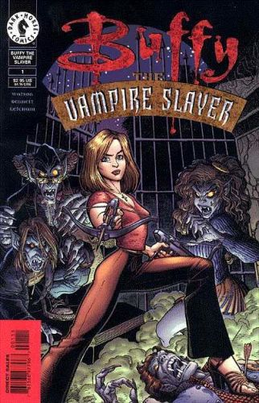

Buffy the Vampire Slayer is an American supernatural drama television series created by Joss Whedon under his production tag, Mutant Enemy Productions, with later co-executive producers being Jane Espenson, David Fury, David Greenwalt, Doug Petrie, Marti Noxon, and David Solomon.
The series premiered on March 10, 1997, on The WB and concluded on May 20, 2003, on UPN. The series narrative follows Buffy Summers (played by Sarah Michelle Gellar), the latest in a line of young women known as "Vampire Slayers", or simply "Slayers".
In the story, Slayers are "called" (chosen by fate) to battle against vampires, demons, and other forces of darkness. Being a young woman, Buffy wants to live a normal life, but as the series progresses, she learns to embrace her destiny. Like previous Slayers, Buffy is aided by a Watcher, who guides, teaches, and trains her. Unlike her predecessors, Buffy surrounds herself with a circle of loyal friends who become known as the "Scooby Gang".

Series: 36 issues 1998, 40 issues 2007
Publisher: Dark Horse
Written by Andi Watson. Art by Joe Bennett and Rick Ketcham. Cover by Art Adams. Buffy Summers is not like other girls. She's been chosen to save the world from the vampire plague, and balancing saving the world with high school is no easy task. Presenting an all-new adventure of everyone's favorite slayer, written by Andi Watson, the creator of Skeleton Key, Joe Bennett, and Rick Ketcham, artist on Superman and Journey into Mystery.
Cover by Jo Chen. Since the destruction of the Hellmouth, the Slayers-newly legion-have gotten organized and are kicking some serious undead butt. But not everything's fun and firearms, as an old enemy reappears and Dawn experiences some serious growing pains... Buffy creator Joss Whedon brings Buffy back to Dark Horse in this direct follow-up to season seven of the smash-hit TV series. Joss Whedon writes Season 8!